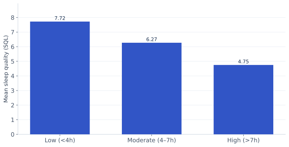
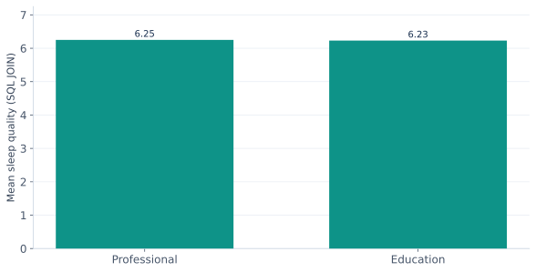

Eight analytical queries
SQL workflowImported the cleaned CSV into SQLite as participants, created a separate occupation-category lookup table, and executed eight queries. Query 8 uses a genuine relational JOIN. Full outputs are downloadable.
↓ Download all 8 SQL queries↓ Download SQLite database
QUERY 0101 Basic selection
Retrieve sample observations and selected variables.
View executable SQL
SELECT user_id, age, occupation, daily_screen_time_hours, sleep_quality_score
FROM participants
LIMIT 12;
Query output
| user_id | age | occupation | daily_screen_time_hours | sleep_quality_score |
|---|
| 1 | 56 | Designer | 3.26 | 7.72 |
| 2 | 46 | Teacher | 1.85 | 9.7 |
| 3 | 32 | Designer | 3.04 | 6.38 |
| 4 | 25 | Software Engineer | 9.0 | 5.53 |
| 5 | 38 | Teacher | 3.52 | 6.69 |
| 6 | 56 | Teacher | 7.26 | 6.16 |
| 7 | 36 | Teacher | 4.56 | 6.81 |
| 8 | 40 | Manager | 3.36 | 8.75 |
| 9 | 28 | Student | 2.3 | 8.05 |
| 10 | 28 | Manager | 9.75 | 5.52 |
| 11 | 41 | Designer | 5.69 | 5.78 |
| 12 | 53 | Designer | 2.03 | 5.79 |
Download full result CSV ↓
QUERY 0202 Filtering
Filter records with high daily screen exposure.
View executable SQL
SELECT user_id, daily_screen_time_hours, sleep_quality_score
FROM participants
WHERE daily_screen_time_hours >= 8
LIMIT 12;
Query output
| user_id | daily_screen_time_hours | sleep_quality_score |
|---|
| 4.0 | 9.0 | 5.53 |
| 10.0 | 9.75 | 5.52 |
| 18.0 | 8.05 | 6.23 |
| 29.0 | 8.1 | 6.87 |
| 33.0 | 9.43 | 3.12 |
| 40.0 | 9.2 | 2.99 |
| 49.0 | 9.16 | 3.95 |
| 56.0 | 9.96 | 3.07 |
| 59.0 | 8.59 | 4.77 |
| 64.0 | 9.94 | 4.61 |
| 72.0 | 9.88 | 4.67 |
| 75.0 | 8.73 | 3.68 |
Download full result CSV ↓
QUERY 0303 Multiple conditions
Combine occupation and screen-time conditions.
View executable SQL
SELECT user_id, occupation, daily_screen_time_hours, sleep_quality_score
FROM participants
WHERE occupation = 'Student' AND daily_screen_time_hours >= 7
LIMIT 12;
Query output
| user_id | occupation | daily_screen_time_hours | sleep_quality_score |
|---|
| 33 | Student | 9.43 | 3.12 |
| 64 | Student | 9.94 | 4.61 |
| 81 | Student | 9.25 | 4.13 |
| 97 | Student | 7.75 | 5.19 |
| 107 | Student | 7.03 | 5.77 |
| 119 | Student | 9.8 | 4.08 |
| 120 | Student | 8.86 | 3.13 |
| 128 | Student | 7.78 | 5.9 |
| 150 | Student | 7.37 | 5.66 |
| 156 | Student | 8.7 | 3.87 |
| 190 | Student | 9.82 | 3.85 |
| 191 | Student | 8.15 | 5.14 |
Download full result CSV ↓
QUERY 0404 Sorting
Rank observations by screen time and quality.
View executable SQL
SELECT user_id, daily_screen_time_hours, sleep_quality_score
FROM participants
ORDER BY daily_screen_time_hours DESC, sleep_quality_score ASC
LIMIT 12;
Query output
| user_id | daily_screen_time_hours | sleep_quality_score |
|---|
| 920.0 | 10.0 | 3.02 |
| 2328.0 | 10.0 | 3.11 |
| 10102.0 | 10.0 | 3.12 |
| 14170.0 | 10.0 | 4.0 |
| 13996.0 | 10.0 | 5.02 |
| 8358.0 | 9.99 | 2.28 |
| 5925.0 | 9.99 | 2.43 |
| 6071.0 | 9.99 | 3.04 |
| 9959.0 | 9.99 | 3.31 |
| 14145.0 | 9.99 | 3.7 |
| 8172.0 | 9.99 | 3.78 |
| 7315.0 | 9.99 | 4.13 |
Download full result CSV ↓
QUERY 0505 Aggregation
Calculate overall descriptive statistics.
View executable SQL
SELECT COUNT(*) AS participants, ROUND(AVG(daily_screen_time_hours),2) AS mean_screen_hours,
ROUND(AVG(sleep_quality_score),2) AS mean_sleep_quality,
ROUND(AVG(sleep_duration_hours),2) AS mean_sleep_hours
FROM participants;
Query output
| participants | mean_screen_hours | mean_sleep_quality | mean_sleep_hours |
|---|
| 15000.0 | 5.5 | 6.25 | 6.51 |
Download full result CSV ↓
QUERY 0606 Group comparison
Compare average outcomes across screen-time groups.
View executable SQL
SELECT screen_group, COUNT(*) AS n, ROUND(AVG(sleep_quality_score),2) AS avg_sleep_quality,
ROUND(AVG(sleep_duration_hours),2) AS avg_sleep_duration
FROM participants GROUP BY screen_group
ORDER BY avg_sleep_quality DESC;
Query output
| screen_group | n | avg_sleep_quality | avg_sleep_duration |
|---|
| Low (<4h) | 4977 | 7.72 | 6.5 |
| Moderate (4–7h) | 5044 | 6.27 | 6.51 |
| High (>7h) | 4979 | 4.75 | 6.52 |
Download full result CSV ↓
QUERY 0707 HAVING
Filter occupation groups using an aggregate threshold.
View executable SQL
SELECT occupation, COUNT(*) AS n, ROUND(AVG(stress_level),2) AS avg_stress
FROM participants GROUP BY occupation HAVING COUNT(*) > 1800
ORDER BY avg_stress DESC;
Query output
| occupation | n | avg_stress |
|---|
| Student | 1861 | 7.18 |
| Manager | 1962 | 7.06 |
| Software Engineer | 1917 | 7.02 |
| Doctor | 1922 | 6.97 |
| Researcher | 1837 | 6.92 |
| Freelancer | 1891 | 6.9 |
| Designer | 1813 | 6.87 |
Download full result CSV ↓
QUERY 0808 JOIN
Join participants with a separate occupation-category lookup table.
View executable SQL
SELECT o.category, COUNT(*) AS n, ROUND(AVG(p.sleep_quality_score),2) AS avg_sleep_quality
FROM participants p JOIN occupation_categories o ON p.occupation=o.occupation
GROUP BY o.category ORDER BY avg_sleep_quality DESC;
Query output
| category | n | avg_sleep_quality |
|---|
| Professional | 9505 | 6.25 |
| Education | 5495 | 6.23 |
Download full result CSV ↓
SQL results → visualizations
These two charts are generated from the results of Query 6 (GROUP BY) and Query 8 (JOIN), satisfying the SQL-to-visualization requirement.
SQL chart 1: sleep quality by screen-time group

Observation: Group averages differ across the three screen-time bands.
Interpretation: The aggregated data summarize a negative association between exposure and sleep quality.
Research implication: Answers the main research question using a SQL GROUP BY result.
SQL chart 2: sleep quality by occupation category

Observation: The joined table yields averages for two occupation categories.
Interpretation: This comparison describes group averages, not individual causal effects.
Research implication: Demonstrates how a relational JOIN supports a grouped research comparison.